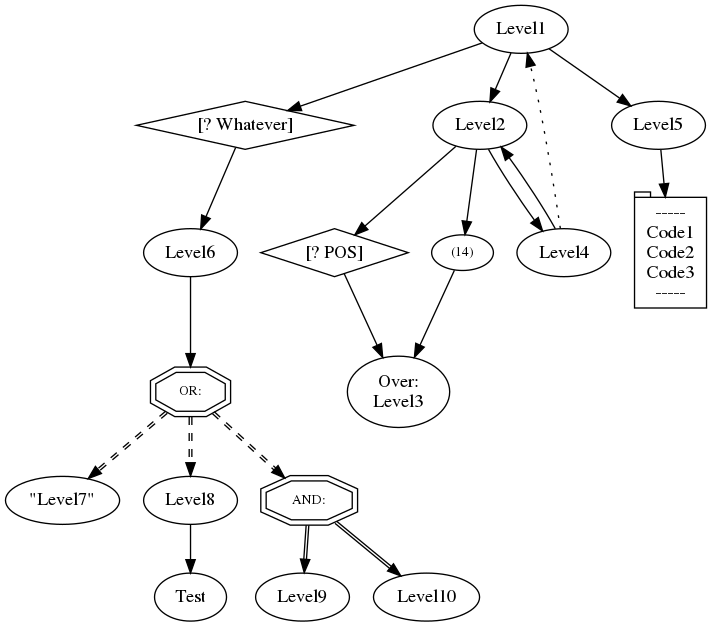

HyperGraph |
|
Notes on the usage of HyperGraphThis program creates a graphical representation of a HyperList. A HyperList can be used to describe anything – any state or any transition - from a todo or shopping list to organizational structures, project plans, business processes or complex logic structures. It represents data in tree-structure lists with a very rich set of features. This online tool will graph your HyperList either as a flow (transition) or as a description of something (state), with or without arrows pointing from/to elements and in the direction you choose. Choose how you want your graph, choose a HyperList file from your PC and press "Upload" to see the resulting graph. Here is a dummy HyperList and the resulting graph:
First Item
Second Item; OR:
Third Item
Fourth Item
Fifth Item
[? Item=Cool] Sixth Item (<Second Item>)
Seventh Item
Eighth Item
 |